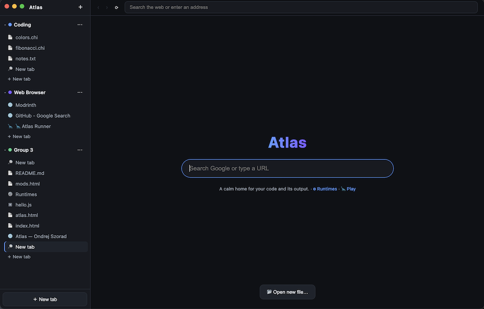
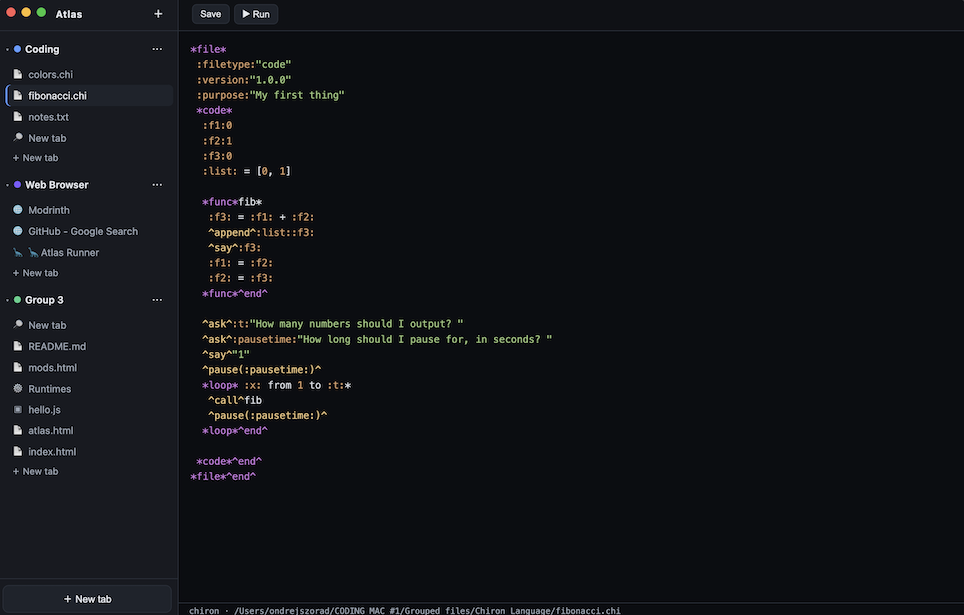
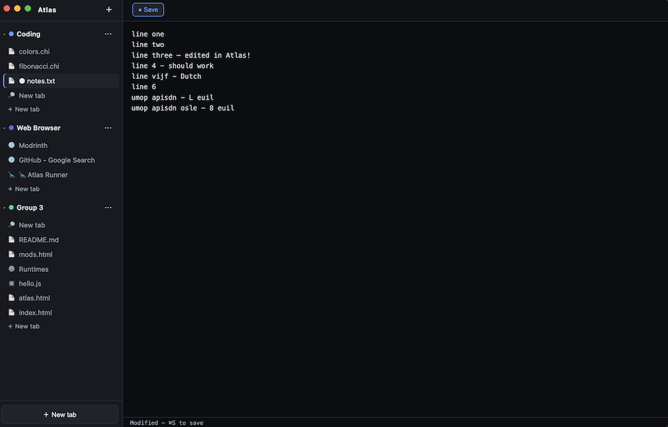
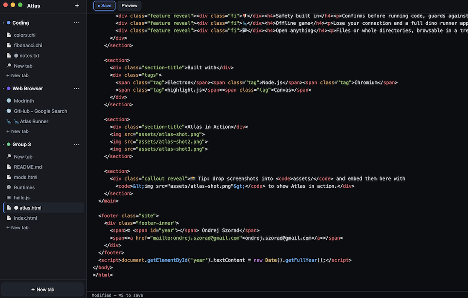

Atlas
A calm browser for serious programmers.
Atlas is a desktop browser built for people who write code. Open a file and it does the right thing: runs it, renders it, or opens it in an editor. Everything you're working on lives in project tab groups, so a whole project — its scripts, its output, its docs, its reference pages — stays together and comes back when you reopen the app.
Runs your code
Execute .py and .chi files and see output in an interactive terminal — with input and ANSI colors.
Canvas output
If a program prints HTML or SVG, Atlas renders it as a page instead of raw text.
Editable, highlighted
A built-in editor with syntax highlighting for ~190 languages — including my own Chiron.
Project tab groups
Group tabs by project, rename and recolor them, drag to reorder, and pick up where you left off.
A real browser
Search the web and open pages, with popups contained and downloads confirmed.
Safety built in
Confirms before running code, guards against runaway processes, and blocks risky navigations.
Offline game
Lose your connection and a full dino runner appears — day/night, birds, ducking, high scores.
Any language
A VS Code-style runtime manager: enable and install runtimes (Node, Go, Rust, Java…) and run any file in the terminal.
Holiday eggs
Atlas dresses up for the holidays — snow at Christmas, an upside-down April Fools, and more, big or subtle to match the day.
Open anything
Files or whole directories, browsable in a tree, all from one "Open" button.
The home screen:

Text highlighting:

Save button:

Another instance:

assets/ and embed them here with
<img src="assets/atlas-shot.png"> to show Atlas in action.